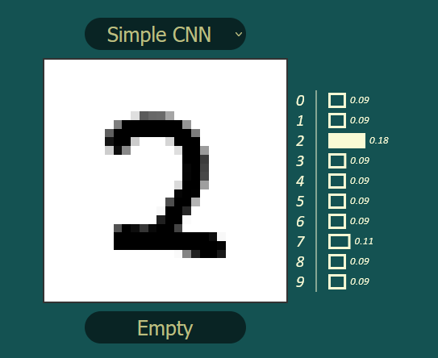
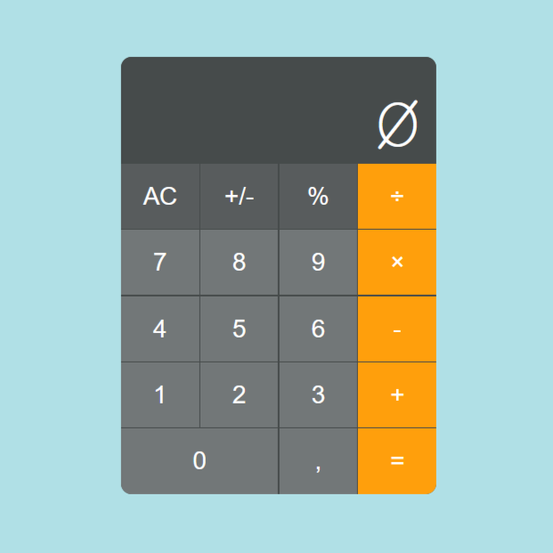

Digit Object Detection
Tegn et siffer for hånd og en modell predikerer hvilket siffer det er og hvor i bildet det er.

Tegn et siffer for hånd og en modell predikerer hvilket siffer det er og hvor i bildet det er.

Tegn et siffer for hånd og en modell predikerer hvilket siffer det er.

Input en mappe med lydfiler og et cover bilde, få en lang sammenhengende video eller flere individuelle.

Et lite prosjekt for å bli kjent med html, css, og javascript.